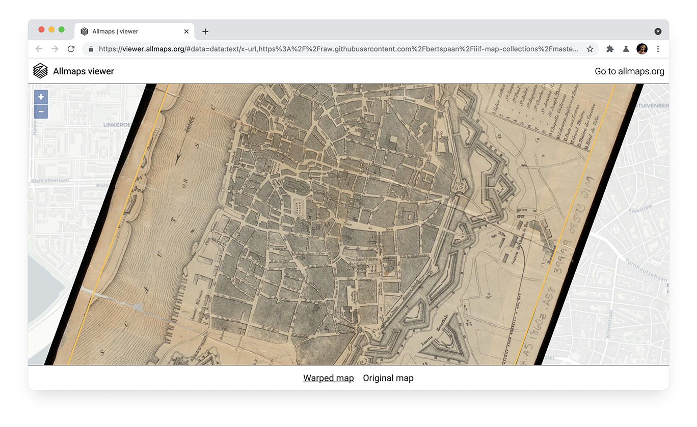

Allmaps is a set of open source tools that make it easier and more fun to search, explore, georeference and work with collections of digitised maps.
Allmaps works with any image repository that supports the International Image Interoperability Framework (IIIF).
By using tiled IIIF images, JavaScript and WebGL, Allmaps can warp georeferenced maps in the browser. This eliminates the need for running a map tile server or WMS server.
All components rely on a simple JSON metadata structure that holds information about each map’s control points and mask. This metadata structure anticipates the upcoming JSON schema prepared by the IIIF Community, and is based on W3C’s Web Annotation specification. Please refer to the IIIF Map Collections repository for exemplary data.
Allmaps and its components are far from finished. For now, you can explore the following links:
Allmaps is a project by Bert Spaan. Follow @bertspaan for updates.
Credits
- Concept
- Bert Spaan
- Jules Schoonman (Delft University of Technology Library)
Partners
- Delft University of Technology Library*
- Leiden University Libraries*
- Rotterdams Publiek*
- IIIF Maps Community Group
* Funding partners